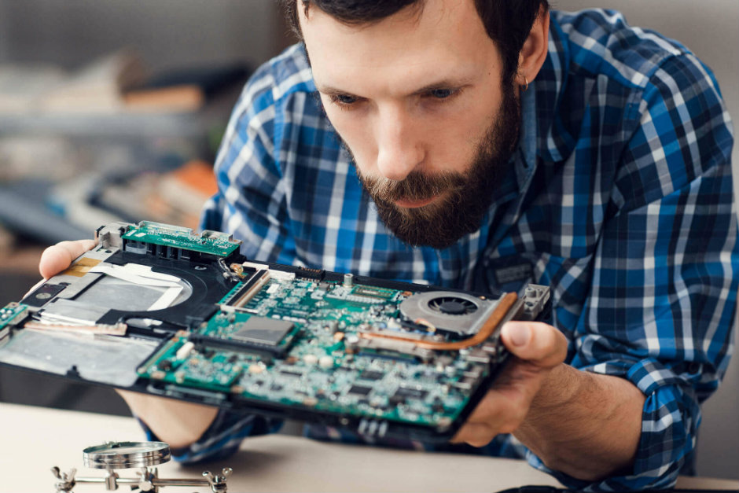
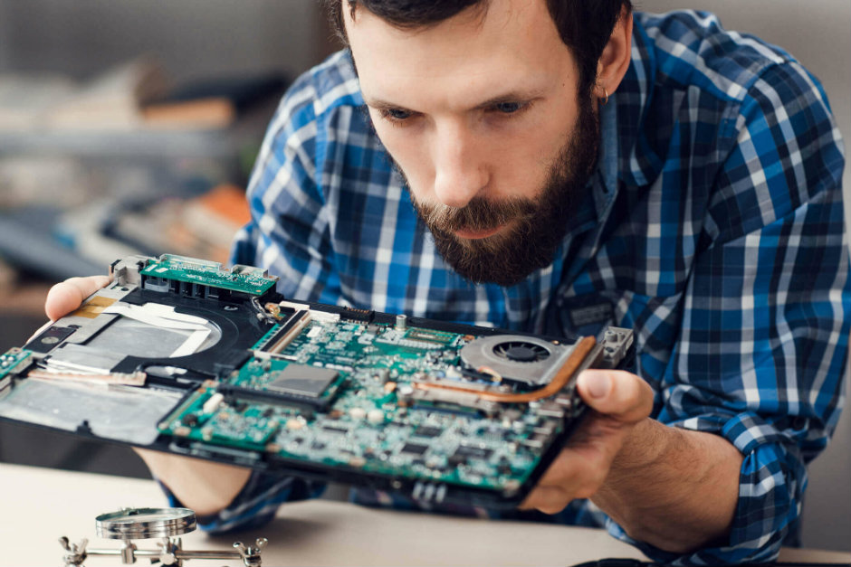

Engenharia da Computação
O que é?
No geral, pode-se dizer que Engenharia da Computação consiste numa mistura de Ciência da Computação e Engenharia Elétrica. Dois ramos que surgem dessa área são Engenharia de Hardware e de Software. Pessoas que escolhem essa área abrem um leque de opções para se especializarem, além de encontrarem muitas oportunidades de emprego.
Existem muitas formas de descrever um engenheiro da computação, mas uma delas define aquele que tem experiência com redes, sistemas, e engenharia de software - também pode descrever alguém que tem experiências com Engenharia Elétrica.
O que um Engheneiro Computacional faz?
Como foi explicado antes, depende da opção de carreira feita pelo engenheiro. Por exemplo:
Engenheiros de Software trabalham com programação, fazem aplicações de smartphones e desenvolvimento de softwares em geral.
Engenheiros de Hardware trabalham com design e manutenção de produtos físicos, como um computador.
Engenheiros de Redes trabalham com design e manutenção de sistemas e redes.
As opções são infinitas, além disso, o engenheiro pode se especializar em algum ramo, como sistemas operacionais, redes de computadores, sistemas de informação, arquitetura de computadores, etc.
Não perca essa oportunidade, confira o curso agora mesmo!